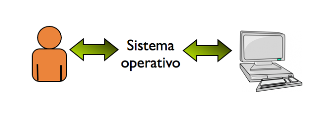
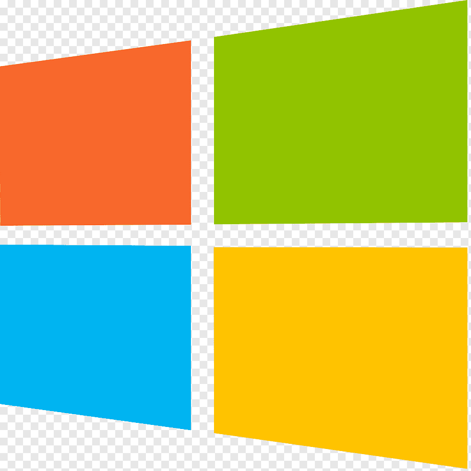
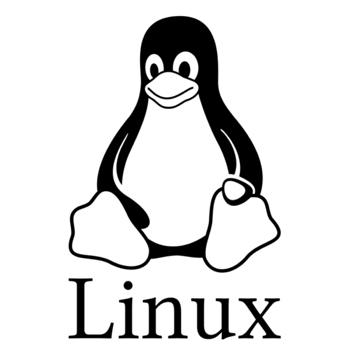
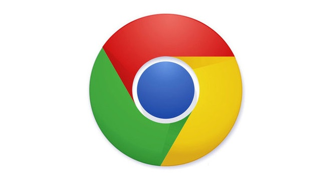

¿Qué es un sistema operativo?
Un sistema operativo es un software utilizado por varios dispositivos electrónicos,
los
cuales pueden ser computadores, dispositivos móviles e incluso televisores,
pues es
el intermediario que permite la interacción entre el usuario y la máquina.
Es
básicamente el software central y más importante de nuestro dispositivo, pues
nos
permite interactuar con él y utilizar los distintas funciones, herramientas y
programas
que tengamos a nuestra disposición.
¿Para qué sirve un sistema operativo?
Un sistema operativo (SO) es un conjunto de programas y software que actúa como intermediario entre el hardwarde una computadora y los programas de aplicación. Es el componente fundamental de cualquier dispositivo informático, desde computadoras personales hasta teléfonos inteligentes, tabletas, servidores y otros dispositivos electrónicos.
Tipos de sistemas operativos
La principal distinción entre un sistema operativo u otro es saber si es de código
fuente abierto o cerrado.
SO de fuente abierta:
Es un software de código abierto (Open Source) este puede ser modificado por el
usuario y se distribuye de manera gratuita.
Tienen derechos de autor y licencias de uso open source.
SO de fuente cerrada:
Es un software que no esta disponible para cualquier persona (usuario), no se pueden
hacer modificaciones o adaptaciones por el usuario.
Están bajo Licencias de uso
Sistemas Operativos mas utilizados
Hagamos un repaso de los sistemas operativos más empleados en la actualidad, de sus características y del perfil de usuarios más adecuado para cada uno de ellos.
-
Microsoft Windows:
Windows es, quizá, el más genérico de todos los sistemas operativos actuales. Creado en 1985, ofrece la mayor gama de aplicaciones para software. Al mismo tiempo, es el que ofrece mayor flexibilidad para la introducción de actualizaciones. Sin embargo, esto también le otorga una alta dosis de inestabilidad y vulnerabilidad, sobre todo en lo que se refiere a los virus que eventualmente pueden atacar el sistema. Es funcional para cualquier tipo de usuario: novel, iniciado, medio, avanzado o experto.
-
GNU/Linux:
Es el sistema operativo «libre» por excelencia. Lleva varios años desarrollándose a la par de las grandes marcas. Entre sus principales ventajas destacan una mayor potencia, estabilidad, seguridad ante amenazas externas y la posibilidad de modificar el sistema según las preferencias individuales. De hecho, es el sistema ideal para aquellos usuarios a los que les guste experimentar constantemente. Una de sus variantes más conocidas es el sistema Android, empleado para teléfonos móviles de alta gama. Android ofrece la posibilidad de programar una amplia lista de aplicaciones a través de una herramienta de Java llamada Dalvik, que a ojos de los usuarios resulta sencilla y hasta didáctica. Su principal inconveniente es que, debido justamente a la rapidez con que evolucionan los dispositivos móviles, las versiones de Android pierden vigencia con rapidez.
-
OSX:

Elegante, sencillo, estable. Aunque es exclusivo para los productos de la casa Apple, en los últimos años ha ido ganando presencia entre los consumidores, sobre todo tras el empleo masivo de dispositivos IPod, IPhone e IPad. Es muy útil para aquellos usuarios que no deseen perder tiempo reinsertando aplicaciones o actualizando permisos para su desarrollo. Su principal inconveniente es el alto precio de los productos Apple en el mercado. Eso sí, la calidad está garantizada de antemano.
-
Chrome OS:
Ha sido uno de los últimos en llegar al mercado. Su principal característica es que todo el trabajo se realiza desde el navegador, con lo cual los dispositivos no requieren de un disco local grande ni de un hardware demasiado sofisticado. Se destaca del resto por la velocidad de navegación, la sencillez y el precio asequible. Es el ideal para usuarios que pueden llevar a cabo la navegación sin necesidad de emplear dispositivos complejos. En Estados Unidos ya es un claro competidor de Windows y OSX.